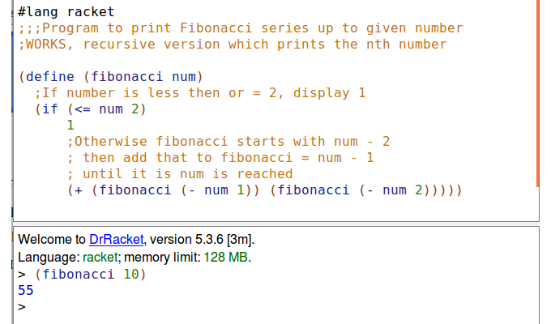

Scheme is a functional based programming language.
Fuctions are created to carry out certain tasks and give an output.
In turn the output from one function can be used in another function.
We can go deeper and use nested functions.
Below is a small example of a scheme program and its output.
